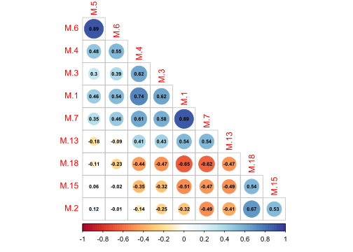
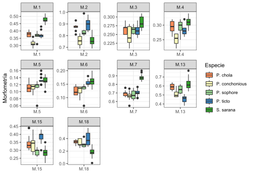
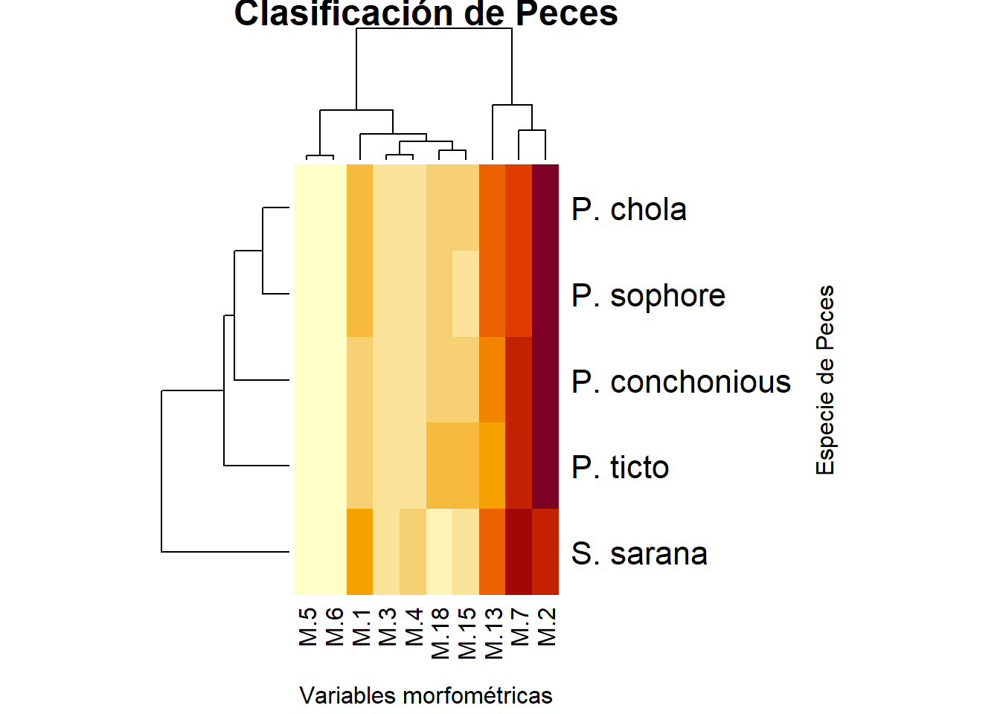
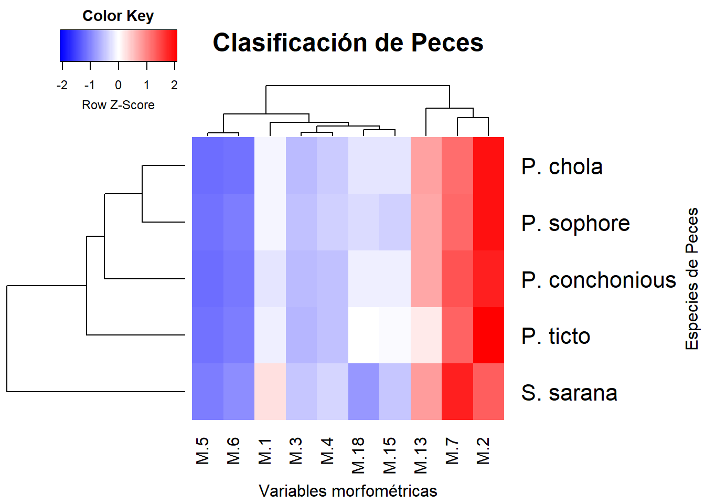
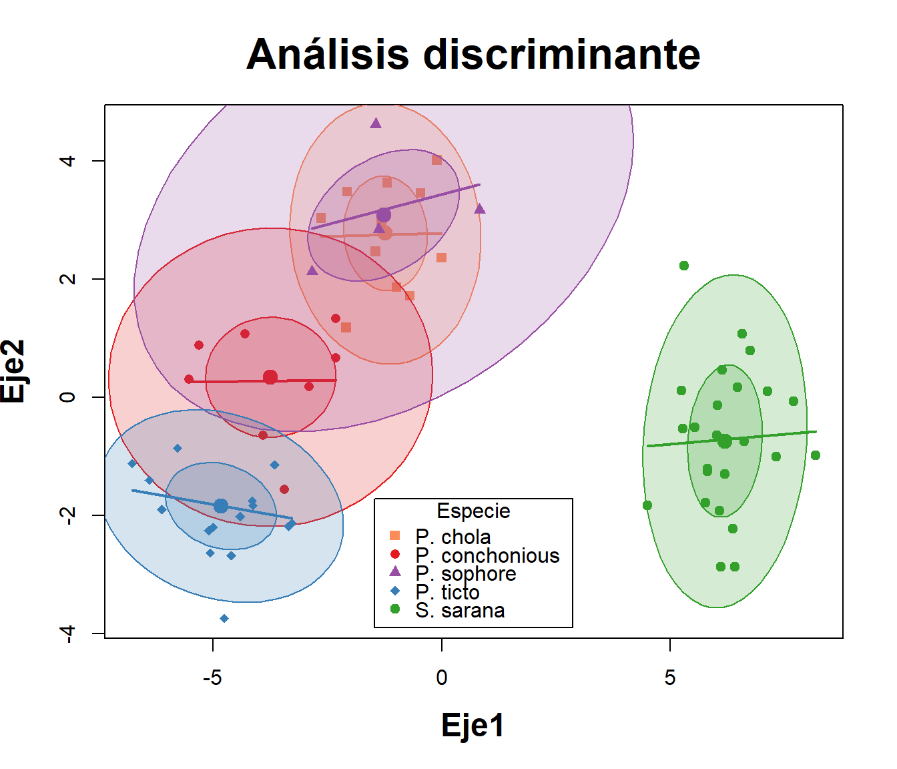
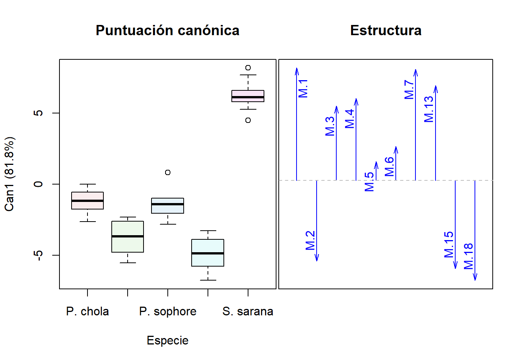

# Librerías requeridas
library(tidyverse)
library(lattice)
library(corrplot)
library(ggplot2)
library(ggrepel)
library(reshape2)
library(ggforce)
library(ade4)
require(vegan)
library(car)
library(MASS)
library(candisc)
library(mvnormtest)Taller 11.1 Análisis Discriminante Lineal - LDA
Datos de morfométricos de peces de ríos de la India
Análisis Discriminante Lineal - LDA - base peces
Objetivo de la actividad:
La base de datos que se utilizará es la de medidas morfométricas de peces de un estudio realizado con peces de la india por Gupta et al. (2018) Articulo fuente en los que se validó la taxonomía de peces de la subfamilia Barbinae, utilizando 19 variables morfométricas y 19 variables meristicas, correspondientes a 5 especies de la familia en mención.

El objetivo de este ejercicio consiste en identificar a las variables morfométricas que mejor discriminan a las especies de peces y si dichas especies se encuentran bien discriminadas en sus grupos taxonómicos asignados. De igual forma se construirá un modelo lineal en el que se puedan incluir nuevos individuos tomados de la misma muestra de peces y puedan ser discriminados de manera eficiente. La base de datos que se utilizará es peces.csv.
Referencias bibliográficas de apoyo.
Libro: Repositorio de archivos y del “Análisis de datos ecológicos y ambientales” - Rodríguez-Barrios Javier (2022) Ver el capítulo de este libro 7.3 Análisis discriminante LDA en donde se detallan los procedimientos que pueden servir de apoyo al presente ejercicio.
Sigatoka en cultivos de banano - Aguirre et al. (2015). Análisis de discriminante canónico y algunas técnicas multivariadas complementarias.
Linear Discriminant Analysis in R Se brinda información sobre las generalidades de los lda y su aplicación en R.
Computing and visualizing LDA in R En este documento se brinda información sobre el análisis y la visualización gráfica del lda.
Cargar las librerías requeridas
Cargar o importar la base de datos
La presente base de datos se encuentra en formato plano de csv, presenta una columna Especie que agrupa a las 5 especies de peces, otra columna Grupo, que asigna un número a cada especie y posteriormente a las 19 variables morfométricas y 10 variables meristicas, de las cuales se selecionarán las 19 morfométricas para este ejercicio M.1 a M.19.
# Base de datos
peces<-read.csv2("peces.csv",row.names=1)
names(peces) [1] "Especie" "Grupo" "M.1" "M.2" "M.3" "M.4" "M.5"
[8] "M.6" "M.7" "M.8" "M.9" "M.10" "M.11" "M.12"
[15] "M.13" "M.14" "M.15" "M.16" "M.17" "M.18" "M.19"
[22] "M.20" "M.21" "M.22" "M.23" "M.24" "M.25" "M.26"
[29] "M.27" "M.28" "M.29"
Exploración de los datos
Para este ejemplo se urtilizarán figuras que relacionan parejas de variables y figuras de cajas que permitan visualizar diferencias entre las especies de peces de acuerdo a su morfometría. *Para facilidad del ejercicio se seleccionarán algunas variables morfométricas - peces1, debido a que son las que presentan mejores patrones lineales.
# Elipses con colores con variables morfométricas
peces1 <- peces[,c(3:9,15,17,20)]
M <- cor(peces1) # Matriz de Correlación (M)La Figura 1 permite visualizar las relaciones lineales entre todas las parejas de variables, incluyendo a los coeficientes de correlación de Pearson.
x11()
corrplot(M, method = "circle", # Correlaciones con circulos
type = "lower", insig="blank", # Forma del panel
order = "AOE", diag = FALSE, # Ordenar por nivel de correlación
addCoef.col ="black", # Color de los coeficientes
number.cex = 0.6, # Tamaño del texto
col = COL2("RdYlBu", 200)) # Transparencia de los circulos
La Figura 2 a diferencia de la anterior, clasifica a los grupos por colores y además incluye a sus coeficientes de correlación y el patrón de distribución de cada variable mediante histogramas de densidad.
peces1 <- peces[,c(3:9,15,17,20)]
peces$Especie <- as.factor(peces$Especie)
x11()
pairs ((peces1),panel=function(x,y)
{abline(lsfit(x,y)$coef,lwd=2,col=3)
lines(lowess(x,y),lty=2,lwd=2,col=2)
points(x,y,col=peces$Especie, cex=1.4,pch=19,lwd=0.6)})
La Figura 3 permite visualizar la resolución de cada variable para diferenciar o discriminar a las diferentes especies de peces. Esta figura sirve de insumo para descartar aquellas variables con poco potencial de discriminación de las especies.
# Figuras multivariadas de Cajas y bigotes
library(reshape)
x11()
ggplot(melt(peces[,c(1,3:9,15,17,20)]), aes(x=variable, y=value)) +
geom_boxplot(aes(fill=Especie)) +
scale_fill_manual(values = c('#fc8d59','#ffffbf','#99d594','#377eb8','#33a02c')) +
labs(x="",y="Morfometría") +
facet_wrap(~ variable,scales="free") +
theme_bw()
Mapa de Calor
El siguiente mapa de calor también permite visualizar a la resolución de las variables morfométricas para diferenciar a las especies de peces, las cuales representan a los grupos en comparación. Con los siguientes comandos se calculará una tabla que resume a los promedios de las 10 variables morfométricas para cada especie evaluada.
# Extracción de los promedios de las variables para cada especie
library(tidyverse)
promedios <- peces %>%
subset(select = c("Especie","M.1","M.2","M.3","M.4","M.5","M.6","M.7","M.13","M.15","M.18")) %>%
na.omit() %>%
group_by(Especie) %>%
summarize(across(everything(), mean))
promedios <- data.frame(promedios) # Guardar promedios como dataframe
# promediosA continuación se comvierte el dataframe a formato matricial - promedios2, para poder ser graficado en el mapa de calor.
# Seleccionar columnas de 2 a 10 del data frame peces1 y convertirlas en matriz
promedios2 <- promedios %>%
subset(select = c(2:11)) %>%
as.matrix()
round(promedios2,2) M.1 M.2 M.3 M.4 M.5 M.6 M.7 M.13 M.15 M.18
1 0.38 0.87 0.27 0.30 0.11 0.12 0.69 0.59 0.35 0.35
2 0.32 0.76 0.25 0.25 0.11 0.13 0.66 0.52 0.34 0.33
3 0.36 0.85 0.26 0.29 0.11 0.13 0.68 0.56 0.29 0.31
4 0.37 0.90 0.26 0.28 0.13 0.15 0.70 0.45 0.39 0.40
5 0.48 0.76 0.28 0.31 0.13 0.16 0.88 0.62 0.28 0.18Ahora se incluyen los nombres de las especies a la matriz promedios2.
# Asignar los valores de la primera columna de peces1 como nombres de fila en la matriz peces2
rownames(promedios2) <- promedios[,1]La Figura 4 permite visualizar a las variables que mejor discriminan a las especies de peces (variables de tonalidad rojiza).
# Figura del primer mapa de calor
x11()
hv <- heatmap(promedios2,
margins=c(5,12),
distfun = dist,
xlab ="Variables morfométricas",
ylab= "Especie de Peces",
main = "Clasificación de Peces") 
La Figura 5 incorpora elementos adicionales como al método de agrupamiento upgma, asumiendo que puede ser el que mejor se ajusta a los datos de este ejercicio.
# Opción 2. Mapa de calor con paquete "stats"
hclust.fq <- function(promedios2)
hclust(promedios2, method="average") # Inserción de UPGMAlibrary("gplots")
x11()
heatmap.2(promedios2, # Base de datos en formato matricial
margins=c(5,12), # Margenes de la figura
scale = "row", # Estandariza variables diferentes.
col = bluered(100), # Colores del mapa de calor
xlab ="Variables morfométricas",
ylab= "Especies de Peces",
main = "Clasificación de Peces",
trace = "none",
density.info = "none",
distfun = dist, # Se puede usar vegdist de "vegan"
hclustfun=hclust.fq) # Agrupamiento UPGMA
Tres pasos para la realización del discriminante lineal - LDA
Paso 1. Pruebas de supuestos
Para que el análisis discriminante lineal sea considerado como un modelo lineal, debe cumplir con los supuestos de normalidad multivariada y de homogeneidad de covarianzas. Para el caso del presente ejercicio, dichos supuestos no alcanzan a cumplirse con los diagnosticos utilizados (valor p > 0.05), motivo por el cual, el lda de este ejercicio será tomado como una técnica de exploración moltivariada para saber que tan bien discriminados quedan los individuos de cada especie, basado en las 10 variables morfométricas seleccionadas.
1.1 Supuesto de normalidad
El supuesto de normalidad multivariada será evaluado con el paquete mvnormtest, el cual utiliza el estadístico de Shapiro Wilks Multivariado. Para ello se realizará esta prueba en cada uno de los grupos o especies en comparación.
# Diagnóstico de normalidad por cada tipo de Especie
library(mvnormtest)Los siguientes generan los dataframes de cada especie con las 10 variables seleccionadas, convirtiendola además en formato matricial.
# Dataframe por cada especie
# datos de P. chola.
P.chola <- peces %>%
filter(Especie == "P. chola") %>%
subset(select = c("M.1","M.2","M.3","M.4","M.5","M.6","M.7","M.13","M.15","M.18")) %>% as.matrix()
# datos de P. conchonious.
P.concho <- peces %>%
filter(Especie == "P. conchonious") %>%
subset(select = c("M.1","M.2","M.3","M.4","M.5","M.6","M.7","M.13","M.15","M.18")) %>% as.matrix()
# datos de P. sophore.
P.sophore <- peces %>%
filter(Especie == "P. sophore") %>%
subset(select = c("M.1","M.2","M.3","M.4","M.5","M.6","M.7","M.13","M.15","M.18")) %>% as.matrix()
# datos de P. ticto.
P.ticto <- peces %>%
filter(Especie == "P. ticto") %>%
subset(select = c("M.1","M.2","M.3","M.4","M.5","M.6","M.7","M.13","M.15","M.18")) %>% as.matrix()
# datos de P. ticto.
S.sarana <- peces %>%
filter(Especie == "S. sarana") %>%
subset(select = c("M.1","M.2","M.3","M.4","M.5","M.6","M.7","M.13","M.15","M.18")) %>% as.matrix() Vale la pena resaltar que los datos de las especies P. chola y P. sophore, son singulares, por lo cual no puede calcularse su supuesto de normalidad multivariada. Con el objeto de continuar en el ejercicio, las matrices que representan a las especies en mención, serán desactivadas con #.
# Prueba de normalidad para cada especie
# norm1 <- mshapiro.test(t(P.chola)) # Matriz singular
norm2 <- mshapiro.test(t(P.concho))
# norm3 <- mshapiro.test(t(P.sophore)) # Matriz singular
norm4 <- mshapiro.test(t(P.ticto))
norm5 <- mshapiro.test(t(S.sarana))A continuación se resume el resultado de los tres diagnósticos de normalidad multivariada realizados. Vale la pena mencionar que ninguna especie cumple con dicho supuesto estadístico (valores p < 0.05), aunque existe la posibilidad de probar con alguna transformación.
# Resumen de el diagnóstico de normalidad
(normalidad = data.frame(Norm.P.concho = norm2$p.value,
Norm.ticto = norm4$p.value,
Norm.sarana = norm5$p.value)) Norm.P.concho Norm.ticto Norm.sarana
1 0.001050723 2.629679e-08 5.169222e-07
1.2 Supuesto de homogeneidad de covarianzas
La prueba de homogeneidad de covarianza o esfericidad, corresponde al segundo supuesto del análisis discriminante lineal, se utilizará la función betadisper, la cual es complementada por dos análisis de varianza, los cuales definirán si el supuesto logra ser cumplido.
# Pruebas de Homogeneidad de covarianzas paquete "vegan"
peces.d <- dist(peces[,c(3:9,15,17,20)]) # Matriz de distancias
peces.homoge <- betadisper(peces.d, peces$Especie) # PermutestCon la siguiente anova se obtiene un valor p de 0.016*, lo cual indica que NO se cumple el supuesto de homogeneidad de covarianzas (valor p < 0.05).
# 1) Prueba con anova permutacional
anova(peces.homoge) Analysis of Variance Table
Response: Distances
Df Sum Sq Mean Sq F value Pr(>F)
Groups 4 0.019804 0.0049509 3.281 0.01638 *
Residuals 65 0.098082 0.0015090
---
Signif. codes: 0 '***' 0.001 '**' 0.01 '*' 0.05 '.' 0.1 ' ' 1Con el permutest se obtiene un valor p de 0.016*, lo cual indica que tampoco se cumple el supuesto de homogeneidad de covarianzas (valor p < 0.05).
# 2) Prueba permutacional
permutest(peces.homoge) # Se cumple el supuesto de homogeneidad
Permutation test for homogeneity of multivariate dispersions
Permutation: free
Number of permutations: 999
Response: Distances
Df Sum Sq Mean Sq F N.Perm Pr(>F)
Groups 4 0.019804 0.0049509 3.281 999 0.015 *
Residuals 65 0.098082 0.0015090
---
Signif. codes: 0 '***' 0.001 '**' 0.01 '*' 0.05 '.' 0.1 ' ' 1
Paso 2. Análisis Discriminante Lineal de Fisher - LDA
A continuación, se realizará el lda, que permitirá generar definir al nivel de discriminación de cada grupo o especie de pez. Se presentan algunas opciones gráficas con el procedimiento general y con el análisis discriminate canónico (dca)
# Cálculo del LDA
names(peces) [1] "Especie" "Grupo" "M.1" "M.2" "M.3" "M.4" "M.5"
[8] "M.6" "M.7" "M.8" "M.9" "M.10" "M.11" "M.12"
[15] "M.13" "M.14" "M.15" "M.16" "M.17" "M.18" "M.19"
[22] "M.20" "M.21" "M.22" "M.23" "M.24" "M.25" "M.26"
[29] "M.27" "M.28" "M.29" dis<-lda (Especie ~ M.1+M.2+M.3+M.4+M.5+M.6+M.7+M.13+M.15+M.18,
data = peces)
round(dis$prior,2) P. chola P. conchonious P. sophore P. ticto S. sarana
0.17 0.11 0.09 0.29 0.34 “Prior probabilities of groups” corresponde a la probabilidad de clasificación para cada grupo que dependerá del número de peces que lo conforman, aquellas especies con mayor número de individuos censados, presentarán mayor probabilidad de discriminación.
Prbabilidad de clasificar indv. de los cinco grupos: P. chola P. conchonious P. sophore P. ticto S. sarana 0.17 0.11 0.09 0.29 0.34
# Insumos del AD
# summary(dis)A continuación se presentan los promedios de cada especie por cada variable morfométrica seleccionada para el análisis.
#Grupos de medias para las 4 variables
round(dis$means,2) M.1 M.2 M.3 M.4 M.5 M.6 M.7 M.13 M.15 M.18
P. chola 0.38 0.87 0.27 0.30 0.11 0.12 0.69 0.59 0.35 0.35
P. conchonious 0.32 0.76 0.25 0.25 0.11 0.13 0.66 0.52 0.34 0.33
P. sophore 0.36 0.85 0.26 0.29 0.11 0.13 0.68 0.56 0.29 0.31
P. ticto 0.37 0.90 0.26 0.28 0.13 0.15 0.70 0.45 0.39 0.40
S. sarana 0.48 0.76 0.28 0.31 0.13 0.16 0.88 0.62 0.28 0.18Los autovalores son los que permiten definir las coordenadas de las variables para cada función canónica (eje o dimensión del lda), para la grafica del discriminante, se utilizarán las funciones LD1 y LD2, como ejes x y y respectivamente (ver @fi-figura6).
# Autovalores estandarizados (pesos de las variables en cada eje)
round((Cs <- dis$scaling),2) LD1 LD2 LD3 LD4
M.1 39.34 -16.59 26.35 21.80
M.2 -13.21 7.17 12.49 -11.29
M.3 -6.94 -6.34 13.47 -0.45
M.4 18.73 51.95 25.65 -9.48
M.5 -17.12 -13.39 -35.00 44.46
M.6 -13.94 -45.46 -9.77 -52.02
M.7 6.98 -9.75 -4.18 -5.66
M.13 10.55 12.26 -5.03 5.43
M.15 -9.08 -8.91 9.32 21.28
M.18 -3.50 -4.82 2.14 4.19En el siguiente insumo se relacionan las coordenadas de las 6 primeras observaciones, las cuales también serán graficadas en la @fi-figura6.
# Coordenadas de las seis primeras observaciones en cada eje canónico
round(head(Fp <- predict(dis)$x),2) LD1 LD2 LD3 LD4
1 -1.19 3.63 0.21 -0.41
2 -0.69 1.72 0.03 0.62
3 -2.64 3.04 1.36 3.00
4 -2.09 1.18 0.97 0.42
5 -1.45 2.47 1.56 -0.07
6 -1.31 2.95 2.77 -0.86La siguiente tabla es conocida como tabla de contingencia la cual realiza una validación cruzada entre las especies (filas) y los grupos discriminados por el lda (columnas). De acuerdo a esta tabla solo P. sophore no discrimina a todos sus individuos en su grupo, debido a que hay dos peces que presentan una morfometría más similar a P. chola.
# Evaluación de desempeño del AD (método 1)
attach(peces)
group<-predict(dis,method="plug-in")$class
(tabla<-table(Especie,group)) group
Especie P. chola P. conchonious P. sophore P. ticto S. sarana
P. chola 12 0 0 0 0
P. conchonious 0 8 0 0 0
P. sophore 2 0 4 0 0
P. ticto 0 0 0 20 0
S. sarana 0 0 0 0 24La siguiente tabla realiza una validación en términos porcentuales, definiendo que en el caso de P. sophore el 64% de sus individuos discriminan correctamente en su especie. El resto de especies presentan una discriminación completa en su grupo.
# Porcentaje de clasificación correcta
round(diag(prop.table(tabla, 1)),2)*100 P. chola P. conchonious P. sophore P. ticto S. sarana
100 100 67 100 100 La siguiente validación realizada por el método de Jacknife, presenta menos resolución de discriminación que la anterior, por lo cual no será tenida en cuenta en este ejercicio.
# M?todo 2: con clasifiación basada en jacknife (validación cruzada dejando uno afuera)
dis.jac <- lda(Especie ~ M.1+M.2+M.3+M.4+M.5+M.6+M.7+M.13+M.15+M.18,
data=peces, CV=TRUE)# Número y proporciones de clasificación correcta
clases.jac <- dis.jac$class
tabla.jac <- table(Especie, clases.jac)
tabla.jac clases.jac
Especie P. chola P. conchonious P. sophore P. ticto S. sarana
P. chola 10 0 2 0 0
P. conchonious 0 7 0 1 0
P. sophore 4 0 2 0 0
P. ticto 0 0 0 20 0
S. sarana 0 0 0 0 24# Validación cruzada
round(diag(prop.table(tabla.jac, 1)),2)*100 P. chola P. conchonious P. sophore P. ticto S. sarana
83 88 33 100 100
Paso 3. Visualización grafica del LDA
- ** 3.1 Gráfico de elipses.**
A continuación se realizará el componente grafico del lda, el cual inicia con una figura que definirá unas elipses, las cuales relacionan a los individuos de cada especie y cuyo solapamiento definirá el nivel de relación entre estas.
# Escores o coordenadas de las observaciones en cada eje can?nico
Fp <- predict(dis)$x# Grupos asignados por el AD
group<-predict(dis,method="plug-in")$class# Coordenadas y grupos asignados
peces.coord=data.frame(Especie=group,Fp)La Figura 6 demuestra que si bien de presenta una buena discriminación de las especies de peces, 4 de las 5 evaluadas presentan cierta relación, definida por el solapamiento de sus elipses.
# Figura del LDA
attach(peces)
x11()
scatterplot(LD2~LD1 | Especie, data=peces.coord,reg.line=FALSE,
smooth=F, spread=F,span= 1,grid=F,
legend=list(coords="bottom"),
ellipse=T,font.lab=2, pch=c(15,16,17,18,19),
col=c('#fc8d59','#e41a1c','#984ea3','#377eb8','#33a02c'),
main="Análisis discriminante",
font.main=2,cex.main=2,cex.lab=1.5,
xlab="Eje1", ylab="Eje2")
- ** 3.2 Gráfico del discriminante canónico - cda**
El siguiente análisis permite visualizar la influencia de cada variable morfométrica en la separación de los grupos de especies y selecciona a las variables que presentan más influencia en la discriminación de los peces.
attach(peces)
names(peces) [1] "Especie" "Grupo" "M.1" "M.2" "M.3" "M.4" "M.5"
[8] "M.6" "M.7" "M.8" "M.9" "M.10" "M.11" "M.12"
[15] "M.13" "M.14" "M.15" "M.16" "M.17" "M.18" "M.19"
[22] "M.20" "M.21" "M.22" "M.23" "M.24" "M.25" "M.26"
[29] "M.27" "M.28" "M.29" Lo primero que se realiza es el modelo lineal mod indicando las variables y los grupos a discriminar.
# Modelo Lineal multivariado con las variables morfom?tricas de peces
mod <- lm(cbind(M.1,M.2,M.3,M.4,M.5,M.6,M.7,M.13,M.15,M.18) ~ Especie,peces)# Resumen del modelo multivariado
# summary(mod)Posteriormente realiza el discriminante canónico can que permite realizar la discriminación de los grupos en los ejes canónicos.
# Análisis discriminante canónico - ADC
can <- candisc(mod, term="Especie",data=peces,ndim=1)A continuación se presenta la figura que define a la discriminación de las especies con un solo eje canónico el cual explica el 81.8% de la variación de los datos. La orientación de los vectores (variables morfométricas), en relación a las cajas, indica su importancia para discriminar a cada especie o grupo en comparación.
x11()
plot(can,titles.1d = c("Puntuación canónica", "Estructura"))
En el siguiente enlace se puede obtener un caso aplicado con este tipo de análisis multivariados: Aguirre et al. (2015). Ver la figura 2 del manuscrito en mención.